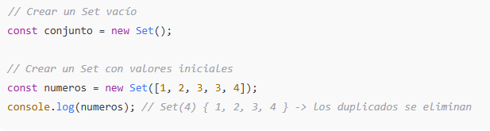
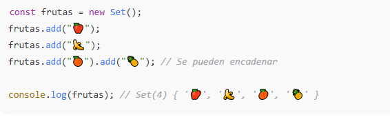
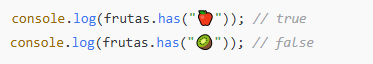
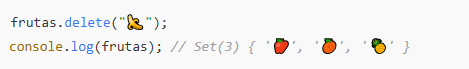
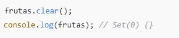
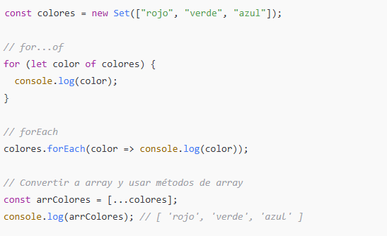
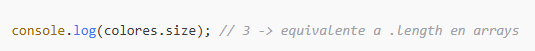
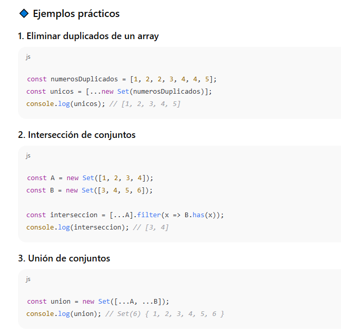
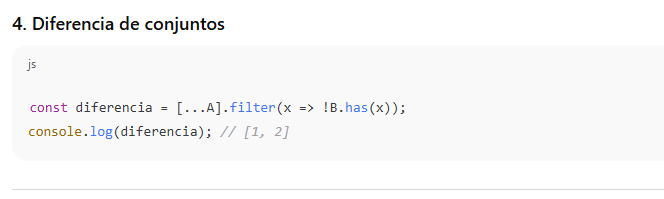

🔹 ¿Qué es un Set?
Un Set en JavaScript es una colección de valores únicos (no permite duplicados).
-
A diferencia de los arrays, un
Setno guarda el índice de los elementos. -
Puede almacenar cualquier tipo de dato: primitivos (números, strings, booleanos) u objetos.
🔹 Creación de un Set

🔹 Métodos principales
➤ Agregar elementos

➤ Acceso y verificación

➤ Eliminar elementos

➤ Vaciar el set

🔹 Iterar sobre un Set
Los Set son iterables, así que se pueden recorrer de varias formas:

🔹 Propiedades útiles



✅ En resumen:
-
Setes ideal cuando necesitas valores únicos. -
Tiene métodos fáciles para añadir, eliminar, limpiar, comprobar y recorrer.
-
Se puede combinar con arrays para operaciones de conjuntos (unión, intersección, diferencia).